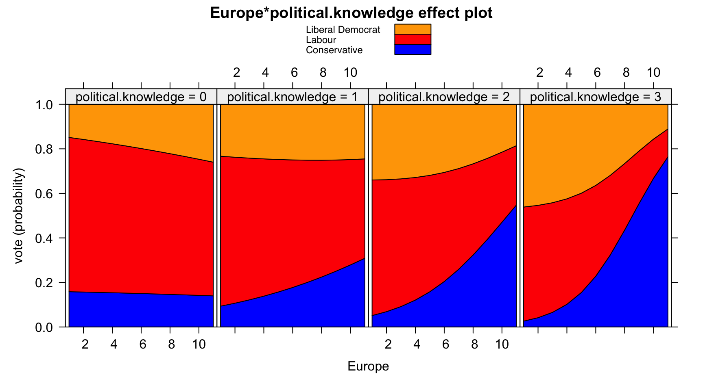

Extending the cv package
John Fox and Georges Monette
2024-01-18
Source:vignettes/cv-extend.Rmd
cv-extend.RmdThe cv package is designed to be extensible in
several directions. In this vignette, we discuss three kinds of
extensions, ordered by increasing general complexity: (1) adding a
cross-validation cost criterion; (2) adding a model class that’s not
directly accommodated by the cv() default method or by
another directly inherited method, with separate consideration of
mixed-effects models; and (3) adding a new model-selection procedure
suitable for use with selectModel().
Adding a cost criterion
A cost criterion suitable for use with cv() or
cvSelect() should take two arguments, y (the
observed response vector) and yhat (a vector of fitted or
predicted response values), and return a numeric index of lack of fit.
The cv package supplies several such criteria:
mse(y, yhat), which returns the mean-squared prediction
error for a numeric response; rmse(y, yhat), which returns
the (square-)root mean-squared error; medAbsErr(y, yhat),
which returns the median absolute error; and
BayesRule(y, yhat) (and its non-error-checking version,
BayesRule2(y, yhat)), suitable for use with a binary
regression model, where y is the binary response coded
0 for a “failure” or 1 for a “success”; where
yhat is the predicted probability of success; and where the
proportion of incorrectly classified cases is returned.
To illustrate using a different prediction cost criterion, we’ll base
a cost criterion on the area under the receiver operating characteristic
(“ROC”) curve for a logistic regression. The ROC curve is a graphical
representation of the classification power of a binary regression model,
and the area under the ROC curve (“AUC”), which varies from 0 to 1, is a
common summary measure based on the ROC (see
"Receiver operating characteristic", 2023). The
Metrics package (Hamner &
Frasco, 2018) includes a variety of measures useful for model
selection, including an auc() function. We convert the AUC
into a cost measure by taking its complement:
AUCcomp <- function(y, yhat) 1 - Metrics::auc(y, yhat)We then apply AUCcomp() to the the Mroz logistic
regression discussed in the main cv package vignette,
which we reproduce here, using the Mroz data frame from the
carData package (Fox &
Weisberg, 2019):
data("Mroz", package="carData")
m.mroz <- glm(lfp ~ ., data=Mroz, family=binomial)
summary(m.mroz)
#>
#> Call:
#> glm(formula = lfp ~ ., family = binomial, data = Mroz)
#>
#> Coefficients:
#> Estimate Std. Error z value Pr(>|z|)
#> (Intercept) 3.18214 0.64438 4.94 7.9e-07 ***
#> k5 -1.46291 0.19700 -7.43 1.1e-13 ***
#> k618 -0.06457 0.06800 -0.95 0.34234
#> age -0.06287 0.01278 -4.92 8.7e-07 ***
#> wcyes 0.80727 0.22998 3.51 0.00045 ***
#> hcyes 0.11173 0.20604 0.54 0.58762
#> lwg 0.60469 0.15082 4.01 6.1e-05 ***
#> inc -0.03445 0.00821 -4.20 2.7e-05 ***
#> ---
#> Signif. codes: 0 '***' 0.001 '**' 0.01 '*' 0.05 '.' 0.1 ' ' 1
#>
#> (Dispersion parameter for binomial family taken to be 1)
#>
#> Null deviance: 1029.75 on 752 degrees of freedom
#> Residual deviance: 905.27 on 745 degrees of freedom
#> AIC: 921.3
#>
#> Number of Fisher Scoring iterations: 4
AUCcomp(with(Mroz, as.numeric(lfp == "yes")), fitted(m.mroz))
#> [1] 0.26362Cross-validating this cost measure is straightforward:
library("cv")
#> Loading required package: doParallel
#> Loading required package: foreach
#> Loading required package: iterators
#> Loading required package: parallel
cv(m.mroz, criterion=AUCcomp, seed=3639)
#> R RNG seed set to 3639
#> 10-Fold Cross Validation
#> criterion: AUCcomp
#> cross-validation criterion = 0.27471
#> full-sample criterion = 0.26362As expected, the cross-validated complement to the AUC is somewhat less optimistic than the criterion computed from the model fit to the whole data set.
As we explain in the vignette “Cross-validation of regression
models,” the cv() function differentiates between CV
criteria that are averages of casewise components and criteria that are
not. Computation of bias corrections and confidence intervals is limited
to the former. We show in the appendix to this vignette that the AUC,
and hence its complement, cannot be expressed as averages of casewise
components.
cv() looks for a "casewise loss" attribute
of the value returned by a CV criterion function. If this attribute
exists, then the criterion is treated as the mean of casewise
components, and cv() uses the unexported function
getLossFn() to construct a function that returns the
casewise components of the criterion.
We illustrate with the mse():
mse
#> function (y, yhat)
#> {
#> result <- mean((y - yhat)^2)
#> attr(result, "casewise loss") <- "(y - yhat)^2"
#> result
#> }
#> <bytecode: 0x56485e51fe60>
#> <environment: namespace:cv>
cv:::getLossFn(mse(rnorm(100), rnorm(100)))
#> function (y, yhat)
#> {
#> (y - yhat)^2
#> }
#> <environment: 0x56485e42d6f8>For this scheme to work, the “casewise loss” attribute must be a
character string (or vector of character strings), here
"(y - yhat)^2", that evaluates to an expression that is a
function of y and yhat, and that computes the
vector of casewise components of the CV criterion.
Adding a model class not covered by the default cv()
method
Independently sampled cases
Suppose that we want to cross-validate a multinomial logistic
regression model fit by the multinom() function in the
nnet package (Venables &
Ripley, 2002). We borrow an example from Fox (2016, sec. 14.2.1), with data from the
British Election Panel Study on vote choice in the 2001 British
election. Data for the example are in the BEPS data frame
in the carData package:
data("BEPS", package="carData")
head(BEPS)
#> vote age economic.cond.national economic.cond.household Blair
#> 1 Liberal Democrat 43 3 3 4
#> 2 Labour 36 4 4 4
#> 3 Labour 35 4 4 5
#> 4 Labour 24 4 2 2
#> 5 Labour 41 2 2 1
#> 6 Labour 47 3 4 4
#> Hague Kennedy Europe political.knowledge gender
#> 1 1 4 2 2 female
#> 2 4 4 5 2 male
#> 3 2 3 3 2 male
#> 4 1 3 4 0 female
#> 5 1 4 6 2 male
#> 6 4 2 4 2 maleThe polytomous (multi-category) response variable is
vote, a factor with levels "Conservative",
"Labour", and "Liberal Democrat". The
predictors of vote are:
-
age, in years; -
econ.cond.nationalandecon.cond.household, the respondent’s ratings of the state of the economy, on 1 to 5 scales. -
Blair,Hague, andKennedy, ratings of the leaders of the Labour, Conservative, and Liberal Democratic parties, on 1 to 5 scales. -
Europe, an 11-point scale on attitude towards European integration, with high scores representing “Euro-skepticism.” -
political.knowledge, knowledge of the parties’ positions on European integration, with scores from 0 to 3. -
gender,"female"or"male".
The model fit to the data includes an interaction between
Europe and political.knowledge; the other
predictors enter the model additively:
library("nnet")
m.beps <- multinom(vote ~ age + gender + economic.cond.national +
economic.cond.household + Blair + Hague + Kennedy +
Europe*political.knowledge, data=BEPS)
#> # weights: 36 (22 variable)
#> initial value 1675.383740
#> iter 10 value 1240.047788
#> iter 20 value 1163.199642
#> iter 30 value 1116.519687
#> final value 1116.519666
#> converged
car::Anova(m.beps)
#> Analysis of Deviance Table (Type II tests)
#>
#> Response: vote
#> LR Chisq Df Pr(>Chisq)
#> age 13.9 2 0.00097 ***
#> gender 0.5 2 0.79726
#> economic.cond.national 30.6 2 2.3e-07 ***
#> economic.cond.household 5.7 2 0.05926 .
#> Blair 135.4 2 < 2e-16 ***
#> Hague 166.8 2 < 2e-16 ***
#> Kennedy 68.9 2 1.1e-15 ***
#> Europe 78.0 2 < 2e-16 ***
#> political.knowledge 55.6 2 8.6e-13 ***
#> Europe:political.knowledge 50.8 2 9.3e-12 ***
#> ---
#> Signif. codes: 0 '***' 0.001 '**' 0.01 '*' 0.05 '.' 0.1 ' ' 1Most of the predictors, including the Europe \(\times\) political.knowledge
interaction, are associated with very small \(p\)-values; the Anova()
function is from the car package (Fox & Weisberg, 2019).
Here’s an “effect plot”, using the the effects
package (Fox & Weisberg, 2019) to
visualize the Europe \(\times\) political.knowledge
interaction in a “stacked-area” graph:
plot(effects::Effect(c("Europe", "political.knowledge"), m.beps,
xlevels=list(Europe=1:11, political.knowledge=0:3),
fixed.predictors=list(given.values=c(gendermale=0.5))),
lines=list(col=c("blue", "red", "orange")),
axes=list(x=list(rug=FALSE), y=list(style="stacked")))
To cross-validate this multinomial-logit model we need an appropriate
cost criterion. None of the criteria supplied by the cv
package—for example, neither mse(), which is appropriate
for a numeric response, nor BayesRule(), which is
appropriate for a binary response—will do. One possibility is to adapt
Bayes rule to a polytomous response:
head(BEPS$vote)
#> [1] Liberal Democrat Labour Labour Labour
#> [5] Labour Labour
#> Levels: Conservative Labour Liberal Democrat
yhat <- predict(m.beps, type="class")
head(yhat)
#> [1] Labour Labour Labour Labour
#> [5] Liberal Democrat Labour
#> Levels: Conservative Labour Liberal Democrat
BayesRuleMulti <- function(y, yhat){
result <- mean(y != yhat)
attr(result, "casewise loss") <- "y != yhat"
result
}
BayesRuleMulti(BEPS$vote, yhat)
#> [1] 0.31869
#> attr(,"casewise loss")
#> [1] "y != yhat"The predict() method for "multinom" models
called with argument type="class" reports the Bayes-rule
prediction for each case—that is, the response category with the highest
predicted probability. Our BayesRuleMulti() function
calculates the proportion of misclassified cases. Because this value is
the mean of casewise components, we attach a
"casewise loss" attribute to the result (as explained in
the preceding section).
The marginal proportions for the response categories are
xtabs(~ vote, data=BEPS)/nrow(BEPS)
#> vote
#> Conservative Labour Liberal Democrat
#> 0.30295 0.47213 0.22492and so the marginal Bayes-rule prediction, that everyone will vote Labour, produces an error rate of \(1 - 0.47213 = 0.52787\). The multinomial-logit model appears to do substantially better than that, but does its performance hold up to cross-validation?
We check first whether the default cv() method works
“out-of-the-box” for the "multinom" model:
cv(m.beps, seed=3465, criterion=BayesRuleMulti)
#> Error in GetResponse.default(model): non-vector responseThe default method of GetResponse() (a function supplied
by the cv package—see ?GetResponse) fails
for a "multinom" object. A straightforward solution is to
supply a GetResponse.multinom() method that returns the
factor response (using the
get_response() function from the insight
package, Lüdecke, Waggoner, & Makowski, 2019),
GetResponse.multinom <- function(model, ...) {
insight::get_response(model)
}
head(GetResponse(m.beps))
#> [1] Liberal Democrat Labour Labour Labour
#> [5] Labour Labour
#> Levels: Conservative Labour Liberal Democratand to try again:
cv(m.beps, seed=3465, criterion=BayesRuleMulti)
#> R RNG seed set to 3465
#> # weights: 36 (22 variable)
#> initial value 1507.296060
#> iter 10 value 1134.575036
#> iter 20 value 1037.413231
#> iter 30 value 1007.705242
#> iter 30 value 1007.705235
#> iter 30 value 1007.705235
#> final value 1007.705235
#> converged
#> Error in match.arg(type): 'arg' should be one of "class", "probs"A traceback() (not shown) reveals that the problem is
that the default method of cv() calls the
"multinom" method for predict() with the
argument type="response", when the correct argument should
be type="class". We therefore must write a
“multinom” method for cv(), but that proves to
be very simple:
cv.multinom <- function (model, data, criterion=BayesRuleMulti, k, reps,
seed, ...){
NextMethod(type="class", criterion=criterion)
}That is, we simply call the default cv() method with the
type argument properly set. In addition to supplying the
correct type argument, our method sets the default
criterion for the cv.multinom() method to
BayesRuleMulti.
Then:
m.beps <- update(m.beps, trace=FALSE)
cv(m.beps, seed=3465)
#> R RNG seed set to 3465
#> 10-Fold Cross Validation
#> cross-validation criterion = 0.32459
#> bias-adjusted cross-validation criterion = 0.32368
#> 95% CI for bias-adjusted CV criterion = (0.30017, 0.34718)
#> full-sample criterion = 0.31869Prior to invoking cv(), we called update()
with trace=FALSE to suppress the iteration history reported
by default by multinom()—it would be tedious to see the
iteration history for each fold. The cross-validated polytomous
Bayes-rule criterion confirms that the fitted model does substantially
better than the marginal Bayes-rule prediction that everyone votes for
Labour.
Mixed-effects models
Adding a cv() method for a mixed-model class is somewhat
more complicated. We provide the cvMixed() function to
facilitate this process, and to see how that works, consider the
"lme" method from the cv package:
cv:::cv.lme
#> function (model, data = insight::get_data(model), criterion = mse,
#> k, reps = 1, seed, ncores = 1, clusterVariables, ...)
#> {
#> cvMixed(model, package = "nlme", data = data, criterion = criterion,
#> k = k, reps = reps, seed = seed, ncores = ncores, clusterVariables = clusterVariables,
#> predict.clusters.args = list(object = model, newdata = data,
#> level = 0), predict.cases.args = list(object = model,
#> newdata = data, level = 1), ...)
#> }
#> <bytecode: 0x5648671201d8>
#> <environment: namespace:cv>Notice that cv.lme() sets up a call to
cvMixed(), which does the computational work.
Most of the arguments of cvMixed() are familiar:
modelis the mixed-model object, here of class"lme".packageis the name of the package in which the mixed-modeling function used to fit the model, herelme(), resides—i.e.,"nlme";cvMixed()uses this argument to retrieve the package namespace.datais the data set to which the model is fit, by default extracted by theget_data()function in the insight package.criterionis the CV criterion, defaulting to themse()function.kis the number of CV folds, defaulting to"loo"for CV by clusters and10for CV by cases.repsis the number of times the CV process is repeated, defaulting to1.seedis the seed for R’s random-number generator, defaulting to a randomly selected (and saved) value.ncoresis the number of cores to use for parallel computation; if1, the default, then the computation isn’t parallelized.clusterVariablesis a character vector of the names of variables defining clusters; if missing, then CV is based on cases rather than clusters.
The remaining two arguments are unfamiliar:
predict.clusters.argsis a named list of arguments to be passed to thepredict()function to obtain predictions for the full data set from a model fit to a subset of the data for cluster-based CV. The first two arguments should beobjectandnewdata. It is typically necessary to tellcvMixed()how to base predictions only on fixed effects; in the case of"lme"models, this is done by settinglevel = 0.Similarly,
predict.cases.argsis a named list of arguments to be passed topredict()for case-based CV. Settinglevel = 1includes random effects in the predictions.
Finally, any additional arguments, absorbed by ..., are
passed to update() when the model is refit with each fold
omitted. cvMixed() returns an object of class
"cv".
Now imagine that we want to support a new class of mixed-effects
models. To be concrete, we illustrate with the glmmPQL()
function in the MASS package (Venables & Ripley, 2002), which fits
generalized-linear mixed-effects models by penalized quasi-likelihood.1 Not
coincidentally, the arguments of glmmPQL() are similar to
those of lme() (with an additional family
argument), because the former iteratively invokes the latter; so
cv.glmmPQL() should resemble cv.lme().
As it turns out, neither the default method for
GetResponse() nor insight::get_data() work for
"glmmPQL" objects. These objects include a
"data" element, however, and so we can simply extract this
element as the default for the data argument of our
cv.glmmPQL() method.
To get the response variable is more complicated: We refit the fixed part of the model as a GLM with only the regression constant on the right-hand side, and extract the response from that; because all we need is the response variable, we limit the number of GLM iterations to 1 and suppress warning messages about non-convergence:
GetResponse.glmmPQL <- function(model, ...){
f <- formula(model)
f[[3]] <- 1 # regression constant only on RHS
model <- suppressWarnings(glm(f, data=model$data, family=model$family,
control=list(maxit=1)))
cv::GetResponse(model)
}Writing the cv() method is then straightforward:
cv.glmmPQL <- function(model, data = model$data, criterion = mse,
k, reps = 1, seed, ncores = 1, clusterVariables, ...){
cvMixed(
model,
package="MASS",
data=data,
criterion=criterion,
k=k,
reps=reps,
seed=seed,
ncores=ncores,
clusterVariables=clusterVariables,
predict.clusters.args=list(object=model,
newdata=data,
level=0,
type="response"),
predict.cases.args=list(object=model,
newdata=data,
level=1,
type="response"),
verbose=FALSE,
...)
}We set the argument verbose=FALSE to suppress
glmmPQL()’s iteration counter when cvMixed()
calls update().
Let’s apply our newly minted method to a logistic regression with a
random intercept in an example that appears in
?glmmPQL:
library("MASS")
m.pql <- glmmPQL(y ~ trt + I(week > 2), random = ~ 1 | ID,
family = binomial, data = bacteria)
#> iteration 1
#> iteration 2
#> iteration 3
#> iteration 4
#> iteration 5
#> iteration 6
summary(m.pql)
#> Linear mixed-effects model fit by maximum likelihood
#> Data: bacteria
#> AIC BIC logLik
#> NA NA NA
#>
#> Random effects:
#> Formula: ~1 | ID
#> (Intercept) Residual
#> StdDev: 1.4106 0.78005
#>
#> Variance function:
#> Structure: fixed weights
#> Formula: ~invwt
#> Fixed effects: y ~ trt + I(week > 2)
#> Value Std.Error DF t-value p-value
#> (Intercept) 3.4120 0.51850 169 6.5805 0.0000
#> trtdrug -1.2474 0.64406 47 -1.9367 0.0588
#> trtdrug+ -0.7543 0.64540 47 -1.1688 0.2484
#> I(week > 2)TRUE -1.6073 0.35834 169 -4.4853 0.0000
#> Correlation:
#> (Intr) trtdrg trtdr+
#> trtdrug -0.598
#> trtdrug+ -0.571 0.460
#> I(week > 2)TRUE -0.537 0.047 -0.001
#>
#> Standardized Within-Group Residuals:
#> Min Q1 Med Q3 Max
#> -5.19854 0.15723 0.35131 0.49495 1.74488
#>
#> Number of Observations: 220
#> Number of Groups: 50We compare this result to that obtained from glmer() in
the lme4 package:
library("lme4")
#> Loading required package: Matrix
m.glmer <- glmer(y ~ trt + I(week > 2) + (1 | ID),
family = binomial, data = bacteria)
summary(m.glmer)
#> Generalized linear mixed model fit by maximum likelihood (Laplace
#> Approximation) [glmerMod]
#> Family: binomial ( logit )
#> Formula: y ~ trt + I(week > 2) + (1 | ID)
#> Data: bacteria
#>
#> AIC BIC logLik deviance df.resid
#> 202.3 219.2 -96.1 192.3 215
#>
#> Scaled residuals:
#> Min 1Q Median 3Q Max
#> -4.561 0.136 0.302 0.422 1.128
#>
#> Random effects:
#> Groups Name Variance Std.Dev.
#> ID (Intercept) 1.54 1.24
#> Number of obs: 220, groups: ID, 50
#>
#> Fixed effects:
#> Estimate Std. Error z value Pr(>|z|)
#> (Intercept) 3.548 0.696 5.10 3.4e-07 ***
#> trtdrug -1.367 0.677 -2.02 0.04352 *
#> trtdrug+ -0.783 0.683 -1.15 0.25193
#> I(week > 2)TRUE -1.598 0.476 -3.36 0.00078 ***
#> ---
#> Signif. codes: 0 '***' 0.001 '**' 0.01 '*' 0.05 '.' 0.1 ' ' 1
#>
#> Correlation of Fixed Effects:
#> (Intr) trtdrg trtdr+
#> trtdrug -0.593
#> trtdrug+ -0.537 0.487
#> I(wk>2)TRUE -0.656 0.126 0.064
# comparison of fixed effects:
car::compareCoefs(m.pql, m.glmer)
#> Warning in car::compareCoefs(m.pql, m.glmer): models to be compared are of
#> different classes
#> Calls:
#> 1: glmmPQL(fixed = y ~ trt + I(week > 2), random = ~1 | ID, family =
#> binomial, data = bacteria)
#> 2: glmer(formula = y ~ trt + I(week > 2) + (1 | ID), data = bacteria,
#> family = binomial)
#>
#> Model 1 Model 2
#> (Intercept) 3.412 3.548
#> SE 0.514 0.696
#>
#> trtdrug -1.247 -1.367
#> SE 0.638 0.677
#>
#> trtdrug+ -0.754 -0.783
#> SE 0.640 0.683
#>
#> I(week > 2)TRUE -1.607 -1.598
#> SE 0.355 0.476
#> The two sets of estimates are similar, but not identical
Finally, we try out our cv.glmmPQL() method,
cross-validating both by clusters and by cases,
cv(m.pql, clusterVariables="ID", criterion=BayesRule)
#> n-Fold Cross Validation based on 50 {ID} clusters
#> cross-validation criterion = 0.19545
#> bias-adjusted cross-validation criterion = 0.19545
#> full-sample criterion = 0.19545
cv(m.pql, data=bacteria, criterion=BayesRule, seed=1490)
#> R RNG seed set to 1490
#> 10-Fold Cross Validation
#> cross-validation criterion = 0.20909
#> bias-adjusted cross-validation criterion = 0.20727
#> full-sample criterion = 0.14545and again compare to glmer():
cv(m.glmer, clusterVariables="ID", criterion=BayesRule)
#> n-Fold Cross Validation based on 50 {ID} clusters
#> cross-validation criterion = 0.19545
#> bias-adjusted cross-validation criterion = 0.19545
#> full-sample criterion = 0.19545
cv(m.glmer, data=bacteria, criterion=BayesRule, seed=1490)
#> R RNG seed set to 1490
#> 10-Fold Cross Validation
#> cross-validation criterion = 0.19545
#> bias-adjusted cross-validation criterion = 0.19364
#> full-sample criterion = 0.15Adding a model-selection procedure
The selectStepAIC() function supplied by the
cv package, which is based on the
stepAIC() function from the nnet package
(Venables & Ripley, 2002) for stepwise
model selection, is suitable for the procedure argument of
cvSelect(). The use of selectStepAIC() is
illustrated in the principal vignette for the package.
We’ll employ selectStepAIC() as a “template” for writing
a CV model-selection procedure. To see the code for this function, type
cv::selectStepAIC at the R command prompt, or examine the
sources for the cv package at https://github.com/gmonette/cv (the code for
selectStepAIC() is in https://github.com/gmonette/cv/blob/main/R/cvSelect.R).
Another approach to model selection is all-subsets regression. The
regsubsets() function in the leaps package
(Lumley & Miller, 2020) implements an
efficient algorithm for selecting the best-fitting linear least-squares
regressions for subsets of predictors of all sizes, from 1 through the
maximum number of candidate predictors.2 To illustrate the use
of regsubsets(), we employ the swiss data
frame supplied by the leaps package:
library("leaps")
head(swiss)
#> Fertility Agriculture Examination Education Catholic
#> Courtelary 80.2 17.0 15 12 9.96
#> Delemont 83.1 45.1 6 9 84.84
#> Franches-Mnt 92.5 39.7 5 5 93.40
#> Moutier 85.8 36.5 12 7 33.77
#> Neuveville 76.9 43.5 17 15 5.16
#> Porrentruy 76.1 35.3 9 7 90.57
#> Infant.Mortality
#> Courtelary 22.2
#> Delemont 22.2
#> Franches-Mnt 20.2
#> Moutier 20.3
#> Neuveville 20.6
#> Porrentruy 26.6
nrow(swiss)
#> [1] 47The data set includes the following variables, for each of 47 French-speaking Swiss provinces circa 1888:
-
Fertility: A standardized fertility measure. -
Agriculture: The percentage of the male population engaged in agriculture. -
Examination: The percentage of draftees into the Swiss army receiving the highest grade on an examination. -
Education: The percentage of draftees with more than a primary-school education. -
Catholic: The percentage of the population who were Catholic. -
Infant.Mortality: The infant-mortality rate, expressed as the percentage of live births surviving less than a year.
Following Lumley & Miller (2020),
we treat Fertility as the response and the other variables
as predictors in a linear least-squares regression:
m.swiss <- lm(Fertility ~ ., data=swiss)
summary(m.swiss)
#>
#> Call:
#> lm(formula = Fertility ~ ., data = swiss)
#>
#> Residuals:
#> Min 1Q Median 3Q Max
#> -15.274 -5.262 0.503 4.120 15.321
#>
#> Coefficients:
#> Estimate Std. Error t value Pr(>|t|)
#> (Intercept) 66.9152 10.7060 6.25 1.9e-07 ***
#> Agriculture -0.1721 0.0703 -2.45 0.0187 *
#> Examination -0.2580 0.2539 -1.02 0.3155
#> Education -0.8709 0.1830 -4.76 2.4e-05 ***
#> Catholic 0.1041 0.0353 2.95 0.0052 **
#> Infant.Mortality 1.0770 0.3817 2.82 0.0073 **
#> ---
#> Signif. codes: 0 '***' 0.001 '**' 0.01 '*' 0.05 '.' 0.1 ' ' 1
#>
#> Residual standard error: 7.17 on 41 degrees of freedom
#> Multiple R-squared: 0.707, Adjusted R-squared: 0.671
#> F-statistic: 19.8 on 5 and 41 DF, p-value: 5.59e-10
cv(m.swiss, seed=8433)
#> R RNG seed set to 8433
#> 10-Fold Cross Validation
#> method: Woodbury
#> criterion: mse
#> cross-validation criterion = 59.683
#> bias-adjusted cross-validation criterion = 58.846
#> full-sample criterion = 44.788Thus, the RMSE for the model fit to the complete data is considerably smaller than the CV estimate of the RMSE. Can we do better by selecting a subset of the predictors, taking account of the additional uncertainty induced by model selection?
First, let’s apply best-subset selection to the complete data set:
swiss.sub <- regsubsets(Fertility ~ ., data=swiss)
summary(swiss.sub)
#> Subset selection object
#> Call: regsubsets.formula(Fertility ~ ., data = swiss)
#> 5 Variables (and intercept)
#> Forced in Forced out
#> Agriculture FALSE FALSE
#> Examination FALSE FALSE
#> Education FALSE FALSE
#> Catholic FALSE FALSE
#> Infant.Mortality FALSE FALSE
#> 1 subsets of each size up to 5
#> Selection Algorithm: exhaustive
#> Agriculture Examination Education Catholic Infant.Mortality
#> 1 ( 1 ) " " " " "*" " " " "
#> 2 ( 1 ) " " " " "*" "*" " "
#> 3 ( 1 ) " " " " "*" "*" "*"
#> 4 ( 1 ) "*" " " "*" "*" "*"
#> 5 ( 1 ) "*" "*" "*" "*" "*"
(bics <- summary(swiss.sub)$bic)
#> [1] -19.603 -28.611 -35.656 -37.234 -34.553
which.min(bics)
#> [1] 4
car::subsets(swiss.sub, legend="topright")Selecting the best model of each size.
The graph, produced by the subsets() function in the
car package, shows that the model with the smallest BIC
is the best model with 4 predictors, including Agriculture,
Education, Catholic, and
Infant.Mortality, but not Examination:
m.best <- update(m.swiss, . ~ . - Examination)
summary(m.best)
#>
#> Call:
#> lm(formula = Fertility ~ Agriculture + Education + Catholic +
#> Infant.Mortality, data = swiss)
#>
#> Residuals:
#> Min 1Q Median 3Q Max
#> -14.676 -6.052 0.751 3.166 16.142
#>
#> Coefficients:
#> Estimate Std. Error t value Pr(>|t|)
#> (Intercept) 62.1013 9.6049 6.47 8.5e-08 ***
#> Agriculture -0.1546 0.0682 -2.27 0.0286 *
#> Education -0.9803 0.1481 -6.62 5.1e-08 ***
#> Catholic 0.1247 0.0289 4.31 9.5e-05 ***
#> Infant.Mortality 1.0784 0.3819 2.82 0.0072 **
#> ---
#> Signif. codes: 0 '***' 0.001 '**' 0.01 '*' 0.05 '.' 0.1 ' ' 1
#>
#> Residual standard error: 7.17 on 42 degrees of freedom
#> Multiple R-squared: 0.699, Adjusted R-squared: 0.671
#> F-statistic: 24.4 on 4 and 42 DF, p-value: 1.72e-10
cv(m.best, seed=8433) # use same folds as before
#> R RNG seed set to 8433
#> 10-Fold Cross Validation
#> method: Woodbury
#> criterion: mse
#> cross-validation criterion = 58.467
#> bias-adjusted cross-validation criterion = 57.778
#> full-sample criterion = 45.916The RMSE for the selected model is (of course) slightly higher than for the full model fit previously, but the cross-validated RMSE is a bit lower; as we explain in the main vignette, however, it isn’t kosher to select and cross-validate a model on the same data.
Here’s a function named selectSubsets(), meant to be
used with cvSelect(), suitable for cross-validating the
model-selection process:
selectSubsets <- function(data=insight::get_data(model),
model,
indices,
criterion=mse,
save.coef=TRUE, ...){
if (inherits(model, "lm", which=TRUE) != 1)
stop("selectSubsets is appropriate only for 'lm' models")
y <- GetResponse(model)
formula <- formula(model)
X <- model.matrix(model)
if (missing(indices)) {
# select the best model from the full data by BIC
sel <- leaps::regsubsets(formula, data=data, ...)
bics <- summary(sel)$bic
best <- coef(sel, 1:length(bics))[[which.min(bics)]]
x.names <- names(best)
# fit the best model; intercept is already in X, hence - 1:
m.best <- lm(y ~ X[, x.names] - 1)
fit.all <- predict(m.best, newdata=data)
return(criterion(y, fit.all)) # return the CV criterion
}
# select the best model omitting the i-th fold (given by indices)
sel.i <- leaps::regsubsets(formula, data[-indices, ], ...)
bics.i <- summary(sel.i)$bic
best.i <- coef(sel.i, 1:length(bics.i))[[which.min(bics.i)]]
x.names.i <- names(best.i)
m.best.i <- lm(y[-indices] ~ X[-indices, x.names.i] - 1)
# predict() doesn't work here:
fit.all.i <- as.vector(X[, x.names.i] %*% coef(m.best.i))
fit.i <- fit.all.i[indices]
# return the fitted values for i-th fold, CV criterion for all cases,
# and the regression coefficients
list(fit.i=fit.i, # fitted values for i-th fold
crit.all.i=criterion(y, fit.all.i), # CV crit for all cases
coefficients = if (save.coef){ # regression coefficients
coefs <- coef(m.best.i)
# fix coefficient names
names(coefs) <- sub("X\\[-indices, x.names.i\\]", "",
names(coefs))
coefs
} else {
NULL
}
)
}A slightly tricky point is that because of scoping issues,
predict() doesn’t work with the model fit omitting the
\(i\)th fold, and so the fitted values
for all cases are computed directly as \(\widehat{\mathbf{y}}_{-i} = \mathbf{X}
\mathbf{b}_{-i}\), where \(\mathbf{X}\) is the model-matrix for all of
the cases, and \(\mathbf{b}_{-i}\) is
the vector of least-squares coefficients for the selected model with the
\(i\)th fold omitted.
Additionally, the command
lm(y[-indices] ~ X[-indices, x.names.i] - 1), which is the
selected model with the \(i\)th fold
deleted, produces awkward coefficient names like
"X[-indices, x.names.i]Infant.Mortality". Purely for
aesthetic reasons, the command
sub("X\\[-indices, x.names.i\\]", "", names(coefs)) fixes
these awkward names, removing the extraneous text,
"X[-indices, x.names.i]".
Applying selectSubsets() to the full data produces the
full-data cross-validated RMSE (which we obtained previously):
selectSubsets(model=m.swiss)
#> [1] 45.916
#> attr(,"casewise loss")
#> [1] "(y - yhat)^2"Similarly, applying the function to an imaginary “fold” of 5 cases returns the RMSE for the cases in the fold, based on the model selected and fit to the cases omitting the fold; the RMSE for all of the cases, based on the same model; and the coefficients of the selected model, which includes 4 or the 5 predictors (and the intercept):
selectSubsets(model=m.swiss, indices=seq(5, 45, by=10))
#> $fit.i
#> [1] 62.922 67.001 73.157 83.778 32.251
#>
#> $crit.all.i
#> [1] 46.297
#> attr(,"casewise loss")
#> [1] "(y - yhat)^2"
#>
#> $coefficients
#> (Intercept) Agriculture Education Catholic
#> 63.80452 -0.15895 -1.04218 0.13066
#> Infant.Mortality
#> 1.01895Then, using selectSubsets() in cross-validation, we
get:
(cv.swiss <- cvSelect(selectSubsets, model=m.swiss,
data=swiss, seed=8433)) # use same folds
#> R RNG seed set to 8433
#> 10-Fold Cross Validation
#> cross-validation criterion = 65.835
#> bias-adjusted cross-validation criterion = 63.644
#> full-sample criterion = 45.916Cross-validation shows that model selection exacts a penalty in RMSE.
Examining the models selected for the 10 folds reveals that there is
some uncertainty in identifying the predictors in the “best” model, with
Agriculture sometimes appearing and sometimes not:
compareFolds(cv.swiss)
#> (Intercept) Catholic Education Infant.Mortality Agriculture
#> Fold 1 59.0852 0.1397 -1.0203 1.2985 -0.17
#> Fold 2 67.0335 0.1367 -1.0499 0.9413 -0.20
#> Fold 3 55.0453 0.1221 -0.8757 1.3541 -0.15
#> Fold 4 62.5543 0.1236 -0.9719 1.0679 -0.16
#> Fold 5 50.4643 0.1057 -0.7863 1.2144
#> Fold 6 68.0289 0.1195 -1.0073 0.8294 -0.17
#> Fold 7 66.5219 0.1357 -1.0827 0.9523 -0.19
#> Fold 8 46.3507 0.0776 -0.7637 1.4463
#> Fold 9 62.2632 0.1230 -1.0067 1.1000 -0.17
#> Fold 10 52.5112 0.1005 -0.7232 1.0809Appendix: Why the complement of AUC isn’t a casewise CV criterion
Consider calculating AUC for folds in which a validation set contains \(n_v\) observations. To calculate AUC in the validation set, we need the vector of prediction criteria, \(\widehat{\mathbf{y}}_{v_{(n_v \times 1)}} = (\widehat{y}_1, ..., \widehat{y}_{n_v})^T\), and the vector of observed responses in the validation set, \(\mathbf{y}_{v_{(n_v \times 1)}} = (y_1, \ldots, y_{n_v})^T\) with \(y_i \in \{0,1\}, \; i = 1, \ldots, n_v\).
To construct the ROC curve, only the ordering of the values in \(\mathbf{\widehat{y}}_v\) is relevant. Thus, assuming that there are no ties, and reordering observations if necessary, we can set \(\mathbf{\widehat{y}}_v = (1, 2, \ldots, n_v)^T\).
If the AUC can be expressed as the casewise mean or sum of a function \(\mathrm{cv}(\widehat{y}_i,y_i)\), where \(\mathrm{cv}: \{1,2,...,n_v\}\times\{0,1\} \rightarrow [0,1]\), then \[\begin{equation} \label{eq:cw} \tag{1} \sum_{i=1}^{n_v} \mathrm{cv}(\widehat{y}_i,y_i) = \mathrm{AUC}(\mathbf{\widehat{y}}_v,\mathbf{y}_v) \end{equation}\] must hold for all \(2^{n_v}\) possible values of \(\mathbf{y}_v = (y_1,...,y_{n_v})^T\). If all \(y\mathrm{s}\) have the same value, either 1 or 0, then the definition of AUC is ambiguous. AUC could be considered undefined, or it could be set to 0 if all \(y\)s are 0 and to 1 if all \(y\)s are 1. If AUC is considered to be undefined in these cases, we have \(2^{n_v} - 2\) admissible values for \(\mathbf{y}_v\).
Thus, equation (\(\ref{eq:cw}\)) produces either \(2^{n_v}\) or \(2^{n_v}-2\) constraints. Although there are only \(2n_v\) possible values for the \(\mathrm{cv(\cdot)}\) function, equation (\(\ref{eq:cw}\)) could, nevertheless, have consistent solutions. We therefore need to determine whether there is a value of \(n_v\) for which (\(\ref{eq:cw}\)) has no consistent solution for all admissible values of \(\mathbf{y}_v\). In that eventuality, we will have shown that AUC cannot, in general, be expressed through a casewise sum.
If \(n_v=3\), we show below that (\(\ref{eq:cw}\)) has no consistent solution if we include all possibilities for \(\mathbf{y}_v\), but does if we exclude cases where all \(y\)s have the same value. If \(n_v=4\), we show that there are no consistent solutions in either case.
The following R function computes AUC from \(\mathbf{\widehat{y}}_v\) and \(\mathbf{y}_v\), accommodating the cases where \(\mathbf{y}_v\) is all 0s or all 1s:
AUC <- function(y, yhat = seq_along(y)) {
s <- sum(y)
if (s == 0) return(0)
if (s == length(y)) return(1)
Metrics::auc(y, yhat)
}We then define a function to generate all possible \(\mathbf{y}_v\)s of length \(n_v\) as rows of the matrix \(\mathbf{Y}_{(2^{n_v} \times n_v)}\):
Ymat <- function(n_v, exclude_identical = FALSE) {
stopifnot(n_v > 0 && round(n_v) == n_v) # n_v must be a positive integer
ret <- sapply(0:(2^n_v - 1),
function(x) as.integer(intToBits(x)) )[1:n_v, ]
ret <- if (is.matrix(ret)) t(ret) else matrix(ret)
colnames(ret) <- paste0("y", 1:ncol(ret))
if (exclude_identical) ret[-c(1, nrow(ret)), ] else ret
}For \(n_v=3\),
Ymat(3)
#> y1 y2 y3
#> [1,] 0 0 0
#> [2,] 1 0 0
#> [3,] 0 1 0
#> [4,] 1 1 0
#> [5,] 0 0 1
#> [6,] 1 0 1
#> [7,] 0 1 1
#> [8,] 1 1 1If we exclude \(\mathbf{y}_v\)s with identical values, then
Ymat(3, exclude_identical = TRUE)
#> y1 y2 y3
#> [1,] 1 0 0
#> [2,] 0 1 0
#> [3,] 1 1 0
#> [4,] 0 0 1
#> [5,] 1 0 1
#> [6,] 0 1 1Here is \(\mathbf{Y}\) with corresponding values of AUC:
cbind(Ymat(3), AUC = apply(Ymat(3), 1, AUC))
#> y1 y2 y3 AUC
#> [1,] 0 0 0 0.0
#> [2,] 1 0 0 0.0
#> [3,] 0 1 0 0.5
#> [4,] 1 1 0 0.0
#> [5,] 0 0 1 1.0
#> [6,] 1 0 1 0.5
#> [7,] 0 1 1 1.0
#> [8,] 1 1 1 1.0The values of \(\mathrm{cv}(\widehat{y}_i, y_i)\) that express AUC as a sum of casewise values are solutions of equation (\(\ref{eq:cw}\)), which can be written as solutions of the following system of \(2^{n_v}\) linear simultaneous equations in \(2n_v\) unknowns: \[\begin{equation} \label{eq:lin} \tag{2} (\mathbf{U} -\mathbf{Y}) \mathbf{c}_0 + \mathbf{Y} \mathbf{c}_1 = [\mathbf{U} -\mathbf{Y}, \mathbf{Y}] \begin{bmatrix} \mathbf{c}_0 \\ \mathbf{c}_1 \end{bmatrix} = \mathrm{AUC}(\mathbf{\widehat{Y}},\mathbf{Y}) \end{equation}\] where \(\mathbf{U}_{(2^{n_v} \times n_v)}\) is a matrix of 1s conformable with \(\mathbf{Y}\); \(\mathbf{c}_0 = [\mathrm{cv}(1,0), c(2,0), ..., \mathrm{cv}(n_v,0)]^T\); \(\mathbf{c}_1 = [\mathrm{cv}(1,1), c(2,1), ..., \mathrm{cv}(n_v,1)]^T\); \([\mathbf{U} -\mathbf{Y}, \mathbf{Y}]_{(2^{n_v} \times 2n_v)}\) and \(\begin{bmatrix}\begin{aligned} \mathbf{c}_0 \\ \mathbf{c}_1 \end{aligned} \end{bmatrix}_{(2n_v \times 1)}\) are partitioned matrices; and \(\mathbf{\widehat{Y}}_{(2^{n_v} \times n_v)}\) is a matrix each of whose rows consists of the integers 1 to \(n_v\).
We can test whether equation (\(\ref{eq:lin}\)) has a solution for any given \(n_v\) by trying to solve it as a least-squares problem, considering whether the residuals of the associated linear model are all 0, using the “design matrix” \([\mathbf{U} -\mathbf{Y}, \mathbf{Y}]\) to predict the “outcome” \(\mathrm{AUC}(\mathbf{\widehat{Y}},\mathbf{Y})_{(2^{n_v} \times 1)}\):
resids <- function(n_v, exclude_identical = FALSE,
tol = sqrt(.Machine$double.eps)) {
Y <- Ymat(n_v, exclude_identical = exclude_identical)
AUC <- apply(Y, 1, AUC)
X <- cbind(1-Y, Y)
opts <- options(warn = -1)
on.exit(options(opts))
fit <- lsfit(X, AUC, intercept = FALSE)
ret <- max(abs(residuals(fit)))
if(ret < tol){
ret <- 0
solution <- coef(fit)
names(solution) <- paste0("c(", c(1:n_v, 1:n_v), ",",
rep(0:1, each = n_v), ")")
attr(ret, "solution") <- zapsmall(solution)
}
ret
}The case \(n_v=3\), excluding identical \(y\)s, has a solution:
resids(3, exclude_identical = TRUE)
#> [1] 0
#> attr(,"solution")
#> c(1,0) c(2,0) c(3,0) c(1,1) c(2,1) c(3,1)
#> 1.0 0.0 -0.5 0.5 0.0 0.0But, if identical \(y\)s are included, the equation is not consistent:
resids(3, exclude_identical = FALSE)
#> [1] 0.125For \(n_v=4\), there are no solutions in either case:
resids(4, exclude_identical = TRUE)
#> [1] 0.083333
resids(4, exclude_identical = FALSE)
#> [1] 0.25Consequently, the widely employed AUC measure of fit for binary regression cannot in general be used for a casewise cross-validation criterion.